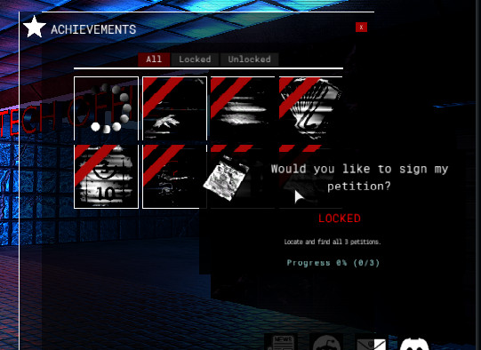
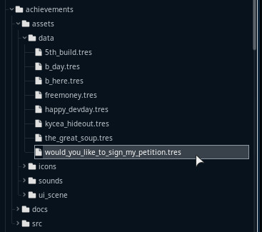
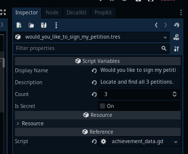
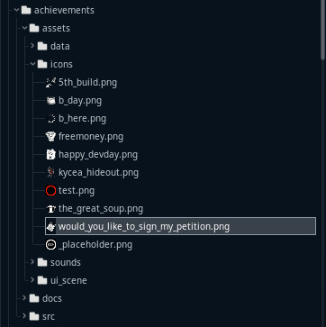
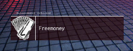

Module: achievements
Documentation last edited: November 23, 2025 at 12:13 UTC
Description

Achievements module. Provides basic toolset to work with achievements in game.
"./assets/data"
contain all achievement resources.
Each resource refers to certain
"./assets/icons"
.PNG image to get an icon:
test_name.tres ->
test_name.png
To lock an achievement:
Achievements.lock("test_name")
To unlock an achievement:
Achievements.unlock("test_name")
To add "count" into an achievement:
Achievements.add_count("test_name", 1)
All of the achievement values are stored inside global Values class so they are saved as soon as Values saved. It is using 2 dictionaries:
achievements_unlocked
and
achievements_counts
achievements_unlocked
- each key is an achievement's codename, and each value is a boolean in which case "true" means unlocked.
achievements_counts
- each key is an achievement's codename, and each value is a number that refers to achievement's current amount property.
How to make an achievement?
0. Create a new
AchievementData
resource at
"res://modules/achievements/assets/data/"
. You can give it any name you wish, it has just to be a unique name that'll serve as a codename of sorts. Using the name of this file you can manipulate the achievement with lock/unlock/add_count/etc methods.


1. Make an icon for an achievement and export it as .PNG at
"res://modules/achievements/assets/icons/"
. File name of the exported image has to be assigned to the achievement's codename.

2. Use in game. The simplest way:
st_unlock_achievement
ST that can unlock an achievement on certain location event. However, you can add one of the
Achievements
methods in code of anything you do.

There's still a way needed to make "Achievement Listeners" that would allow to program complex achievement behaviors that might require complex steps to accomplish. However, this is all for the future yet.
General Information
Root directories list
assets, docs, src
Nodes
Achievements
AchievementUnlockedDisplay
Classes
None
Resources
Other Scripts
None